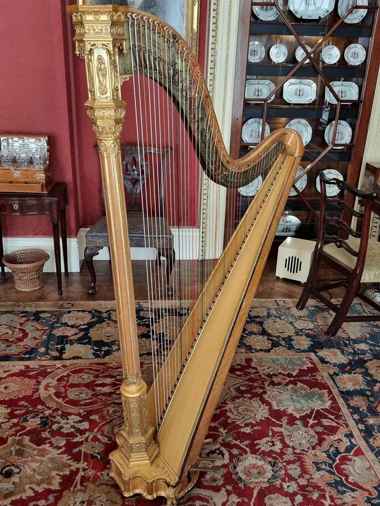

故事
1966 年，她坐進了丈夫樂團裡的鋼琴位置。她是 Alice Coltrane，1937 年生在底特律。她從小在教會彈琴，後來去了巴黎，跟 Bud Powell 學過爵士。
六十年代初，她在一個四重奏裡認識了 John Coltrane。1965 年，兩人結婚。隔年，她接替 McCoy Tyner，成為柯川樂團的鋼琴手。

1967 年柯川過世，她開始用自己的名字發唱片。她後來彈起豎琴，把印度音樂的味道帶進爵士。下次聽到爵士裡的豎琴，想想這位從鋼琴椅上走出來的人。
故事後面
Alice Coltrane 從小在底特律的教會彈琴，五十年代末去巴黎，跟 Bud Powell 學過爵士。
她接替 McCoy Tyner 成為 John Coltrane 樂團的鋼琴手，柯川過世後，她開始發表自己的作品。
她把豎琴帶進爵士，作品裡常有印度音樂和靈性的色彩，近年被很多年輕音樂人重新發現。

這樣聽
聽豎琴像水一樣流過，底下貝斯一直重複同一句。
逐句英文
In 1966 she took the piano chair in her husband's band.
She was Alice Coltrane, born in Detroit in 1937.
She played in church as a girl and later studied jazz with Bud Powell in Paris.
In the early 1960s she met John Coltrane while playing in a quartet.
They married in 1965.
The next year she replaced McCoy Tyner as Coltrane's pianist.
After Coltrane died in 1967, she began releasing records under her own name.
She took up the harp and brought the feel of Indian music into jazz.
Next time you hear harp in jazz, think of the woman who came from the piano bench.
查證筆記與出處
巴黎習琴時間：條目寫五十年代末，確切年份待查。四重奏是 Terry Gibbs 的，稿裡沒點名。「印度音樂」是她七十年代作品的普遍描述。
一分鐘影片版在 Instagram @jazz101tw。